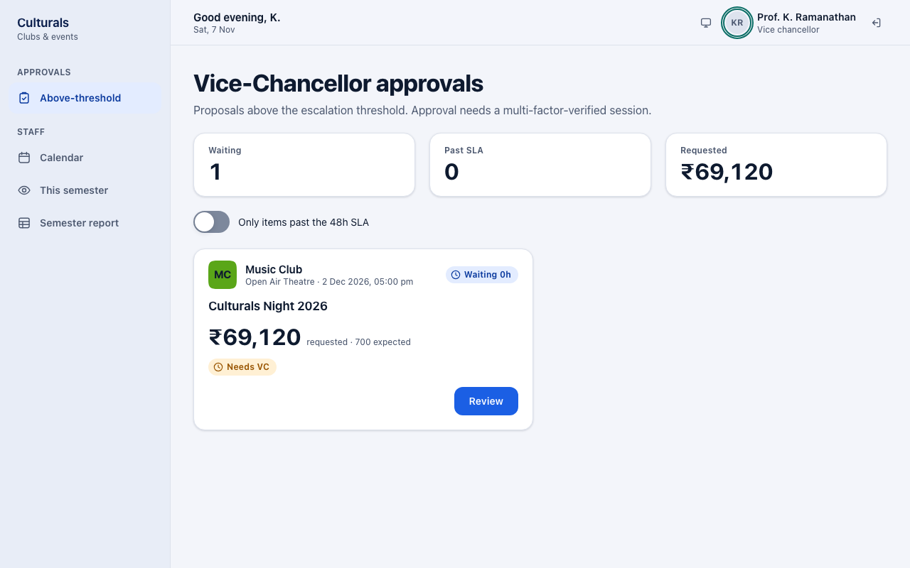
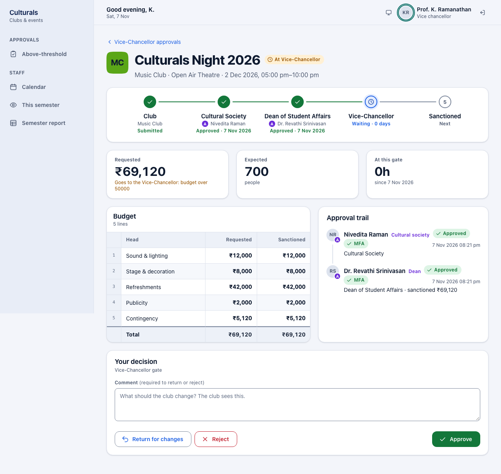
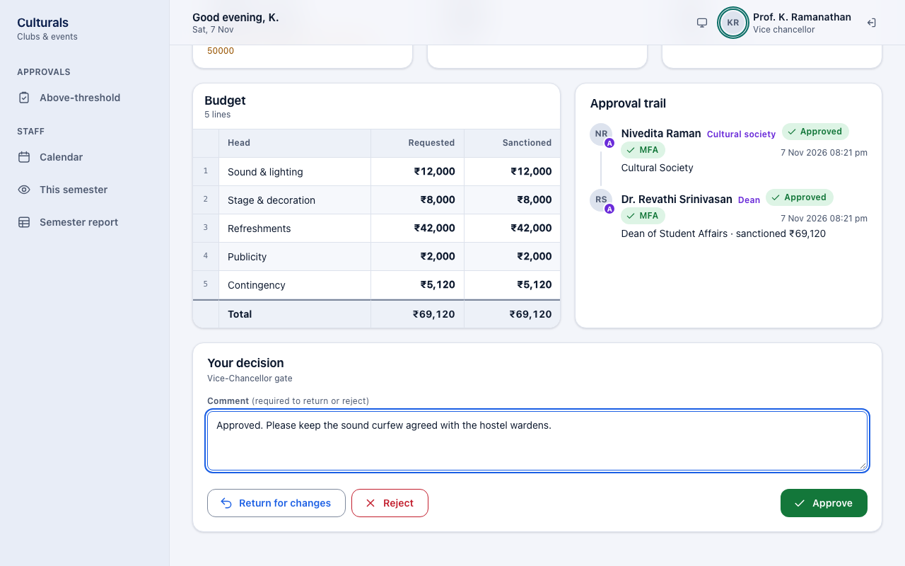
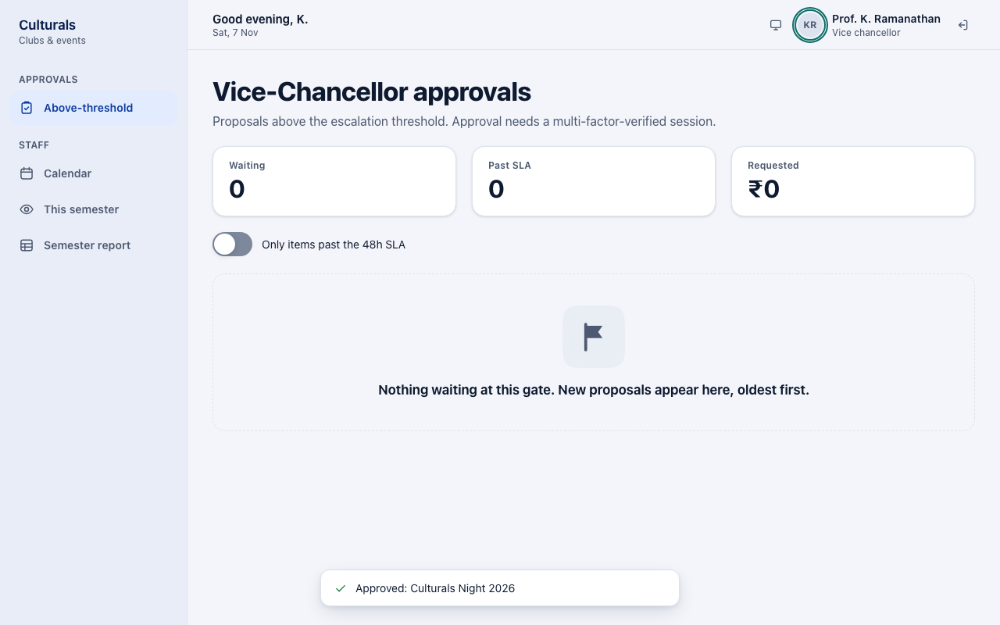
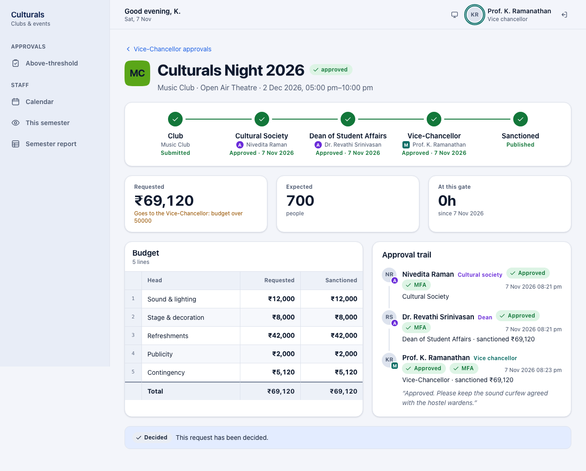
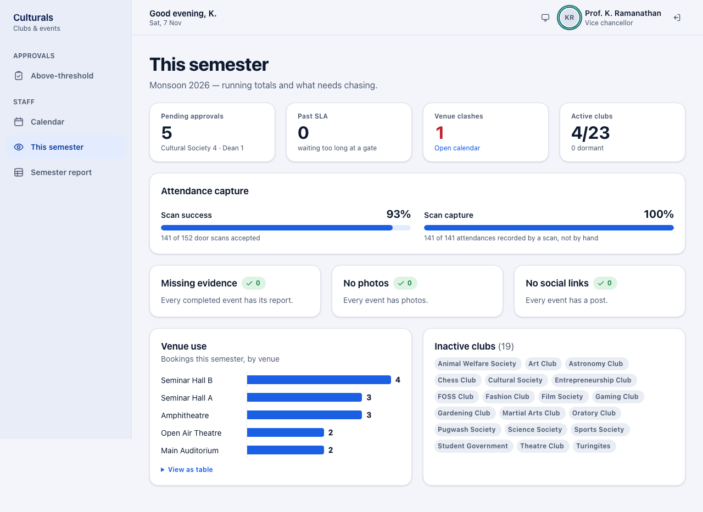
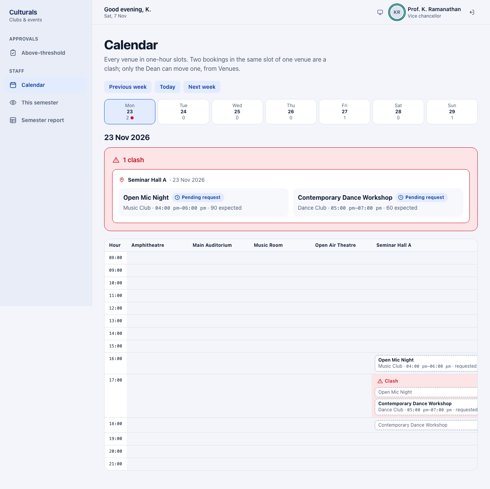
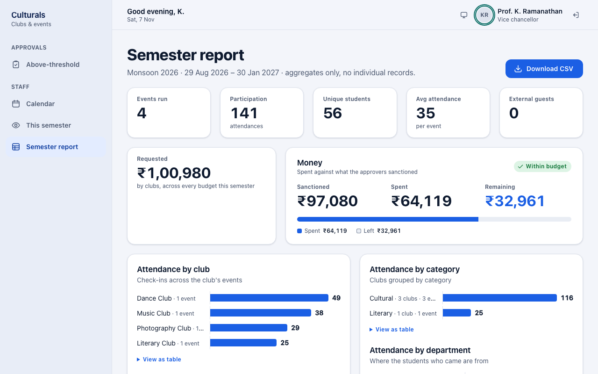

Vice-Chancellor guide
This chapter is for the Vice-Chancellor (management). You are the last approval gate, and only for the largest proposals: those with a budget above ₹50,000 and events that are part of a fest. You can also see the events calendar, the semester overview and the semester report.
How a proposal reaches you
A club's proposal goes to the Cultural Society (cultural and literary clubs only), then the Dean (always), and comes to you only when the budget is above ₹50,000 or the event is part of a fest. Everything else is published by the Dean's approval and never reaches you. See the approval flow for the diagram.
So by the time a proposal is in your queue, the Society (if needed) and the Dean have already approved it, and the Dean has set the sanctioned amounts.
Signing in
Sign in with your Institutional email and Password, click I have an authenticator code, type the 6-digit code from your authenticator app, and click Sign in. The Vice-Chancellor cannot sign in without the code, and approving at your gate is refused for any session that was not verified with it. These approvals release the largest amounts, so a password alone must not be enough. Each decision is marked MFA in the trail. See the Cultural Society guide for a picture of the form.
What you see after signing in
You start on Above-threshold, titled Vice-Chancellor approvals. The side menu has:
- Above-threshold: proposals waiting for you.
- Calendar: every venue booking, hour by hour.
- This semester: running totals and things to chase up.
- Semester report: attendance and money for the semester.

The figures show how many proposals are Waiting, how many are Past SLA (waiting more than 48 hours at your gate) and the total Requested. Turn on Only items past the 48h SLA to see only the late ones. Every card here carries the Needs VC tag.
Review and approve a proposal
- On a card, click Review.
- Check the proposal: - The route shows the Cultural Society and the Dean approved, with names and dates, and that it is now Waiting at the Vice-Chancellor. - Under Requested, the reason it came to you, for example Goes to the Vice-Chancellor: budget over 50000. - Budget: what the club requested and what the Dean sanctioned for each line. - Approval trail: each earlier decision with its comment and the MFA mark.

- In Your decision, type a Comment if you want to. It is optional to approve and required to return or reject. The club sees it.
- Choose one: - Approve: the event is published at the amounts the Dean sanctioned. - Return for changes: the club can revise and resubmit it. The new version starts again at the first gate. - Reject: the proposal is closed. This is final.

- You return to your queue with a confirmation, for example Approved: Culturals Night 2026.

Open the proposal again to see the finished route (Sanctioned · Published) and all three decisions in the trail.

You do not edit budget lines at your gate. If an amount looks wrong, return the proposal with a comment.
This semester
This semester gives a picture of the whole semester:
- Pending approvals, split by gate, and how many are Past SLA (waiting more than 48 hours at any gate).
- Venue clashes, with Open calendar.
- Active clubs out of all clubs.
- Attendance capture: how many door scans were accepted, and how many attendances were recorded by a scan rather than by hand.
- Missing evidence, No photos, No social links: completed events whose report is incomplete.
- Venue use and Inactive clubs.

Calendar
Calendar shows every venue booking, one week at a time. It is read-only; only the Dean can move an event.
- Use Previous week, Today and Next week to change the week.
- Each day in the week strip shows how many bookings it has. A red dot marks a day with a clash. Click a day to open it.
- The day opens as a grid: venues across the top, one row per hour. A booking with a solid outline is approved; a dashed one marked requested is still going through approval.
- A slot holding two bookings in one venue turns red and says Clash, and the pair is listed above the grid.

Semester report
Semester report shows totals for completed events in the current semester: events run, attendance, unique students, average attendance, external guests, money requested, sanctioned and spent, and attendance by club, category and department, followed by a table of events. It has totals only, no individual student records. Click Download CSV to save it as a spreadsheet.

Good to know
- Why is my queue empty? Only proposals above ₹50,000 or part of a fest come to you, and only after the Dean has approved them.
- Why can't I approve? If the error says a second factor is required, sign out and sign in again with your authenticator code. If it mentions a venue clash, the Dean has to move one of the events first.
- Covering for someone? If someone else is covering your gate (or you are covering theirs), a note at the top of the queue says so, and the trail records both names.
Known issues
- The reason line shows a raw number ("budget over 50000") rather than "₹50,000".
- On a decided proposal the status tag shows the raw lowercase state ("approved").
- The Semester report's Requested tile says "across every budget this semester", but it adds up completed events only, so approving Culturals Night 2026 does not change it.